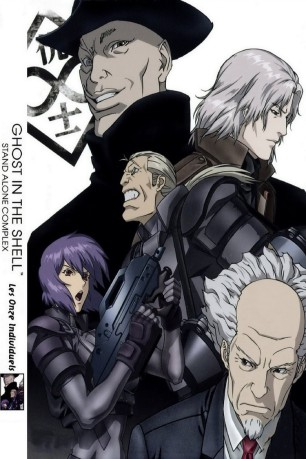

#10027 Ghost in the Shell: S.A.C. 2nd GIG - Individual Eleven
 
 IMDB-Wertung: 8.4 / 10
IMDB-Wertung: 8.4 / 10  Metascore: 0
Metascore: 0 
Als eine Serie von Terroranschlägen von einer Gruppe namens Individual Eleven begangen wird, wird dies dem eh schon heiklen Flüchtlingsproblem zugeschrieben. Nun liegt es an Section 9 das Problem zu lösen und Motoko Kusanagi findet einen überraschenden Zusammenhang zu ihrer Vergangenheit. Dieser Film ist die 160 minütige Kurzfassung von Ghost in the Shell: S.A.C. 2nd GIG, in dem die wichtigsten Punkte der Serie zusammengefasst und auch neue Szenen gezeigt werden.
Jahr: 2006
Dauer: 163 Minuten
FSK:
Land: Japan Studio: Bandai Visual CompanyTonspuren: DTS-HD - ,
Untertitel: Deutsch,
Auflösung: 1080p (1920x1080) Größe: 16793 MB
Genre: Action, Drama, Sci-Fi, Animation/Trick, Mystery
Regisseur: Kenji Kamiyama
Drehbuch: Kenji Kamiyama, Shirow Masamune
Soundtrack: Yôko Kanno
Darsteller:
Datei: X:\HD-Anime-Collections\Ghost in the Shell\Ghost in the Shell S.A.C. 2nd GIG - Individual Eleven (2006, FSK, 1920x1080).mkv seit 21.11.2018
Festplatte: Gemischt-01+Anime
 Es gibt insgesamt 15 Filme in der Gruppe 'HD-Anime-Collections\Ghost in the Shell'
Es gibt insgesamt 15 Filme in der Gruppe 'HD-Anime-Collections\Ghost in the Shell'